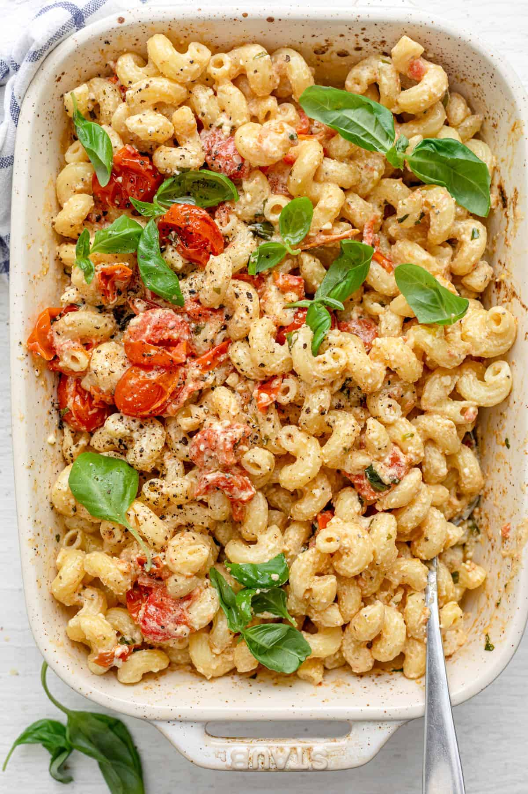

Feta Pasta

Description
This recipe became viral on TikTok for being easy and delicious! It is a one pot and chuck it in the oven recipe, for days where you have little energy and time in the evening to cook something simple for dinner. The tanginess of feta and freshness of cherry tomatoes make a great combo to add flavours to the pasta dish.
Ingredients
- 250g Pasta
- 2 pints Cherry Tomatoes
- 1 block Feta Cheese
- 1 Garlic Clove
- Basil
Steps
- Set oven to 200C
- Wash tomatoes. Transfer to baking dish
- Drizzle tomatoes with olive oil
- Add little salt and pepper. Toss
- Add feta cheese in the middle. Top it up with olive oil and black pepper
- Put it in the oven and bake for 35 mins
- Start boiling water and cooking pasta
- Add cooked pasta into the baking dish. Add seasoning to your liking. Mix well